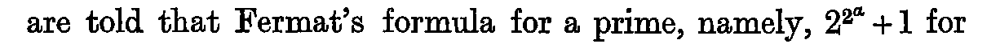
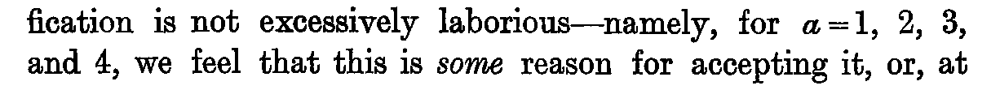
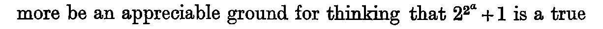
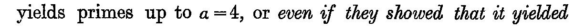
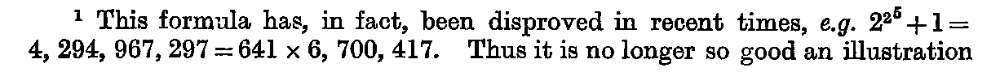

Chapter XXI. The Nature of Inductive Argument Continued
J. M. Keynes, A Treatise on Probability (London: Macmillan, 1921), first edition, pp. 242–250 (Cornell copy, PDF pp. 262–270). Formula atlas: every ledger row of the chapter beside the printed line it records.
| In Lean (✓+≈+✎+外) | 3 / 3 formulas, 100.0% — of which proved (✓+≈+✎) 3: ✓1 ≈2 ✎0; not yet 0 |
|---|---|
| Ledger rows | 7 |
| Formulas | 3 (display 0, inline 3; items 3, numbered 0) |
| Formulas by Lean status | ✓1 ≈2 ✎0 未0 |
| Notation | 4 (with a Lean counterpart 0) |
| Reference rows | 0 |
Every count on this page is computed from the census ledger, which is built from the page images of the 1921 first edition only (no translation, OCR or e-text is used to count). A formula is an expression containing a relation sign (=, ≠, <, >, ≤, ≥, ≡, ⊃, → and their printed variants, including formulas inside figures, tables and footnotes, and formulas quoted from other authors); a display formula counts one per printed line, so a chain of equalities set over three lines counts three, and an inline formula counts one per expression. A compound expression without a relation sign (such as a/h, g(φ, f) or x1x2…xn/ġh) is counted separately as notation; a bare symbol, even with subscripts, primes or bars, is not counted. Footnote formulas follow the same rule, and a formula reprinted on another page is counted again. The Lean column of a formula row takes one of six values, fixed mechanically (legend below).
Legend: the Lean column of a formula row
- ✓Printed form
- the printed relation appears in a theorem statement (only bound-variable names, Lean notation and subscript layout may differ).
- ≈Equivalent form
- the theorem states an algebraically equivalent form (denominators cleared, a definition substituted, hypotheses re-parametrised).
- ✎Corrected form
- the printed form is refuted and a corrected form is the theorem.
- 外Depends on a named external axiom
- depends on a named external axiom (e.g. independence, equal chance) that Keynes's own axioms do not yield; the theorem is proved, the premise is not.
- 定Definition counterpart
- the line defines, names, fixes a notation, or states a premise of an example (not a claim to be derived); it is carried as a hypothesis, and the Lean definition, or the theorem whose hypothesis carries it, is cited; there is no theorem statement to compare.
- 未Not yet
- nothing in the statement of any theorem (lines inside a proof, values absorbed by substitution, sums only). The card names one of the five classes below.
Not yet (未): five classes
- Other author's formula
- another author's formula, quoted or criticised by Keynes; a theorem refuting it, if any, is named; ✎ is not used, since ✎ is reserved for Keynes's own printed errors.
- Rejected by Keynes
- a rule or a simplified form that Keynes himself rejects as invalid, or says does not follow.
- Boundary: needs an outside axiom
- boundary: the line becomes a theorem only if an axiom Keynes does not state is added, e.g. an application of the Principle of Indifference such as φ(x)/h = φ(y)/h, or a probability value assigned in an example; the contrast is
phase12b_underdetermination/underdetermined, where the axioms leave a/h undetermined. - Approximation / measured value
- an equation printed as approximate, or a value from a table of measurements.
- No general proof
- no proof of the general form: only numerical checks, finite-model values, or steps inside a proof.
ch21-001

- Transcription
2^{2^a} + 1- Lean
- 未
- Quoted from
- Fermat
- Anchor words
formula for a prime, namely,- Remarks
- 既存 F21.1
- Crop
- folio 242, x 125–1335, y 1422–1477 (full-size scan pixels)
ch21-002

- Transcription
a = 1, 2, 3, and 4- Lean
- ≈(数値評価: th_21_fermat_primes) keynes_misc_numerics/th_21_fermat_primes (a = 1, 2, 3, 4 で 2^(2^a) + 1 は素数; norm_num の素数判定)
- Anchor words
laborious—namely, for- Remarks
- 既存 F21.2。B50: 「a = 1, 2, 3, and 4 で検証済み」を素数性の算術として評価した (5, 17, 257, 65537)
- Crop
- folio 242, x 125–1335, y 1526–1628 (full-size scan pixels)
ch21-003

- Transcription
2^{2^a} + 1- Lean
- 未
- Reprint of
- ch21-001
- Quoted from
- Fermat
- Anchor words
ground for thinking that- Remarks
- 既存 F21.3 の前半
- Crop
- folio 242, x 125–1335, y 1829–1883 (full-size scan pixels)
ch21-004

- Transcription
a = 4- Lean
- ≈(数値評価: th_21_fermat_a4) keynes_misc_numerics/th_21_fermat_a4 (2^(2^4) + 1 = 65537、素数; norm_num)
- Anchor words
it yields primes up to- Remarks
- 既存 F21.3 の後半。B50: a = 4 の値 65537 まで素数であることの算術評価
- Crop
- folio 242, x 125–1335, y 1932–1984 (full-size scan pixels)
ch21-005

- Transcription
2^{2^5} + 1 = 4, 294, 967, 297 = 641 × 6, 700, 417.- Lean
- ✓keynes_misc_numerics/th_21_euler_641 (2^(2^5) + 1 = 4294967297 ∧ 4294967297 = 641 × 6700417; 付加: 合成数、因数 641・6700417 は素数; norm_num)
- Anchor words
disproved in recent times, e.g.- Remarks
- 既存 F21.4。脚注 1 行目末
2^{2^5}+1=で改行し 2 行目に続く。桁区切りコンマの後に細い空白 (原寸で確認)。B50 r1 (司令塔裁定): 印刷の算術等式 2 本がそのまま定理の連言肢なので ✓ - Crop
- folio 242, x 125–1335, y 2096–2172 (full-size scan pixels)
ch21-006
- Transcription
5, 15, 35, 45, 65, 95- Lean
- 未
- Quoted from
- Jevons
- Anchor words
the following six numbers :- Remarks
- 既存 F21.5。終止ピリオドなし
- Crop
- folio 243, x 125–1335, y 865–942 (full-size scan pixels)
ch21-007
- Transcription
7, 17, 37, 47, 67, 97.- Lean
- 未
- Quoted from
- Jevons
- Anchor words
consider the six numbers,- Remarks
- 既存 F21.6。終止ピリオドあり
- Crop
- folio 243, x 125–1335, y 1172–1251 (full-size scan pixels)